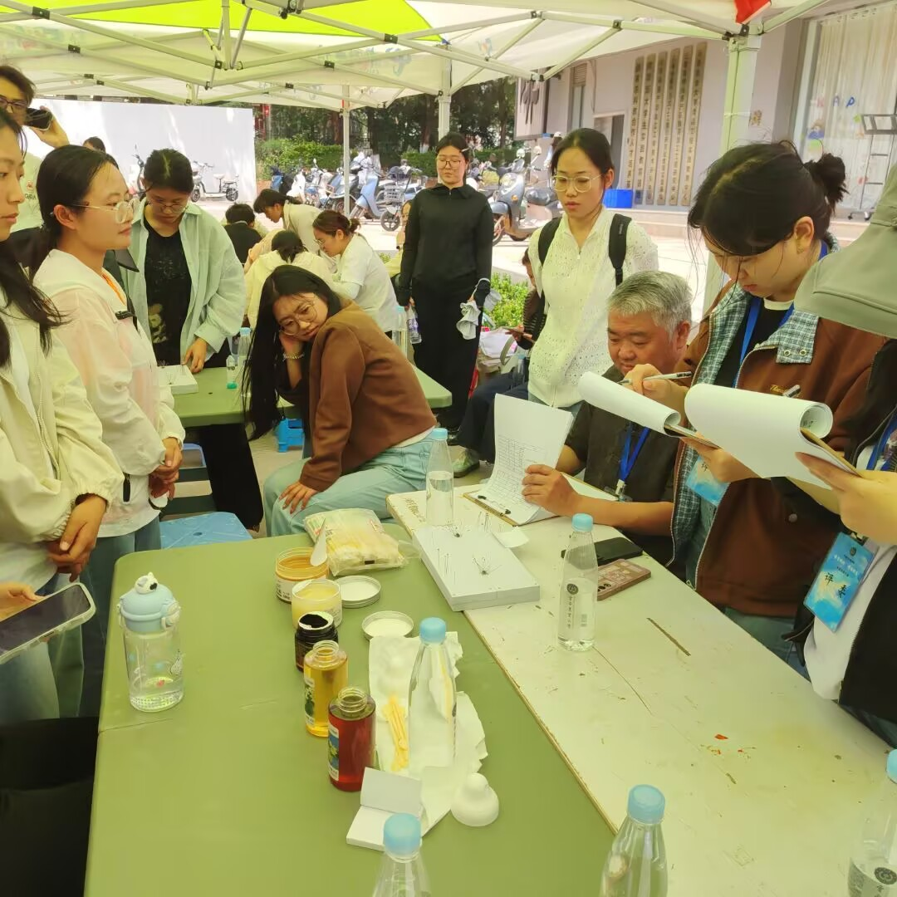
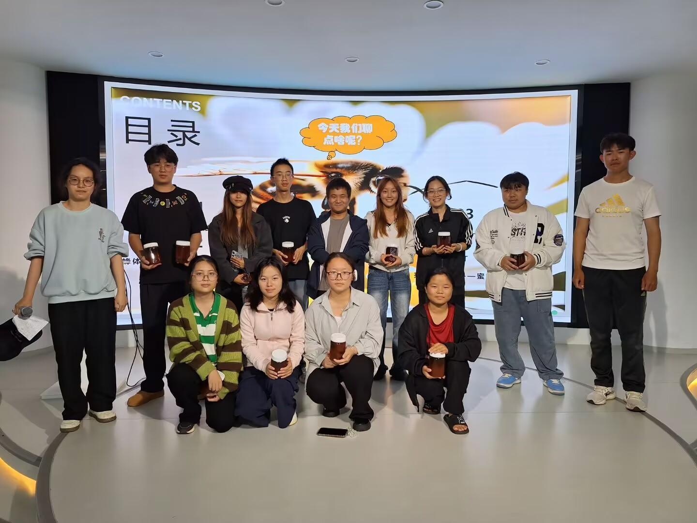
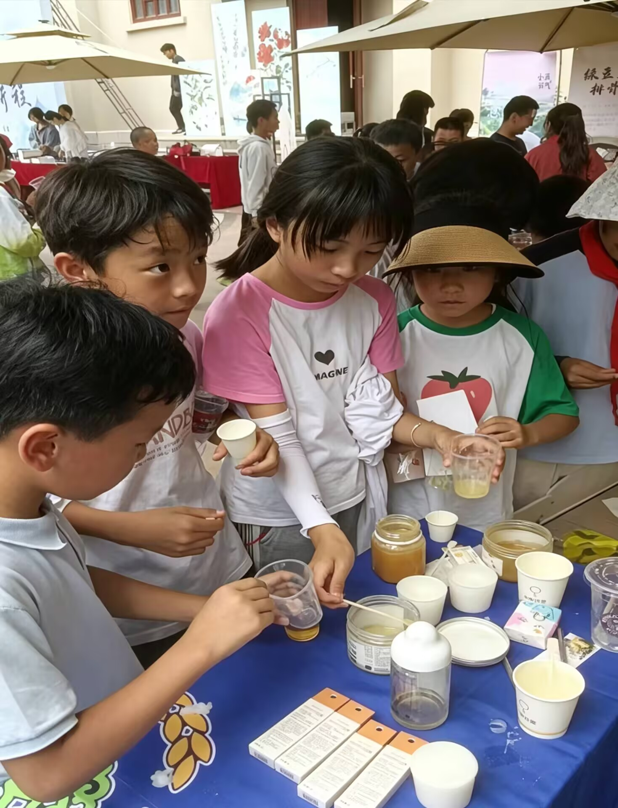
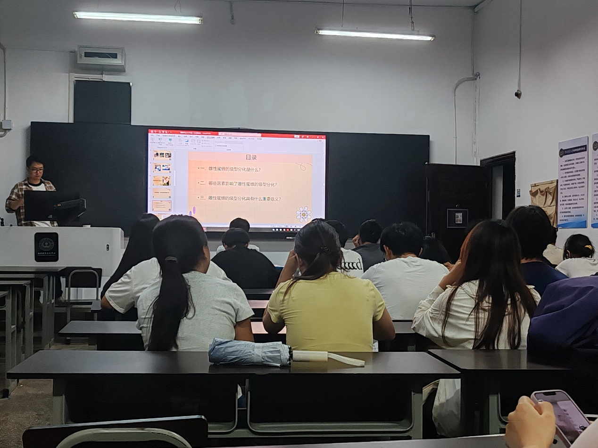
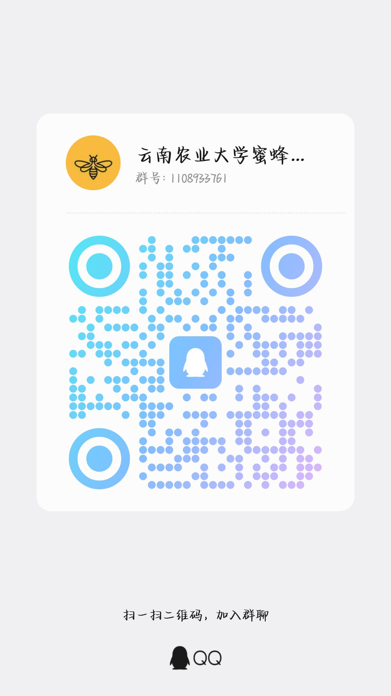

组织部
主要负责策划与组织各类社团活动。
活动策划
我们是谁
本社团成立于2019年，至今已有六年发展历史，是以本校蜂学专业学生为核心骨干、面向全校同学开放的专业实践类学生社团。社团以普及蜂学知识、传承养蜂实践技能、传播蜂产品文化为宗旨，下设组织部、生活部、外联部、宣传部四大职能部门，分工协作常态化开展各类特色活动。
社团长期开展蜜蜂科普宣讲、蜂产品价值推广、养蜂实操实训、蜂学创新实践等活动，兼顾专业学习与综合素质培养。多年来，社团围绕蜂学专业特色推进品牌建设，将理论知识与田间实践结合，形成"科普宣传+实操实训+对外交流"三位一体的活动特色。在活动过程中，着重锻炼社员专业实操、科研创新能力，培养团队协作、沟通表达素养。
未来，社团将持续深耕蜂学专业领域，丰富科普与实践活动形式，搭建专业学习交流平台，吸纳更多热爱蜂学的同学，助力社员夯实专业基础、拓展综合能力，传播蜜蜂生态价值与蜂产业文化。
组织架构
主要负责策划与组织各类社团活动。
活动策划承担物资采购及相关费用报销。
后勤保障负责与其他社团对接联谊等合作事宜，进行沟通交涉。
对外联络负责社团海报、新闻稿撰写等工作。
宣传推广活动剪影
从蜜蜂标本制作到农耕文化节特色展示，从蜂蜡唇膏手作到世界蜜蜂日科普。
每一帧都是蜜蜂学社的甜蜜注脚。
品牌项目
面向全校师生开展蜂文化展览，展示蜂产品、手工蜂蜡制品，科普蜜蜂生态知识，社员现场讲解互动，传播蜂学专业文化。
蜂文化展览 · 蜂产品展示 · 生态科普
02面向全校学生开展蜜蜂科普与标本制作教学，专业老师全程指导，提供全套工具，大家动手制作蜜蜂标本，科普蜂学知识，锻炼实操能力。
科普讲解 · 标本制作 · 实操能力组织社员开展蜂蜡唇膏DIY，老师讲解蜂蜡特性与制作流程，动手实践蜂产品深加工，提升专业实操与创新动手能力。
蜂蜡特性 · 深加工实践 · 创新动手
04结合世界蜜蜂日开展科普活动，面向全校师生展示各类蜂产品，讲解蜜蜂授粉的生态价值，现场互动体验，普及护蜂知识。
世界蜜蜂日 · 授粉价值 · 护蜂科普
05组织全体社员召开年度大会，总结社团往期活动成果，规划本学期实践、科普活动安排，完成干事换届交流，凝聚社员，推进蜂学科普工作开展。
年度总结 · 干事换届 · 凝聚社员